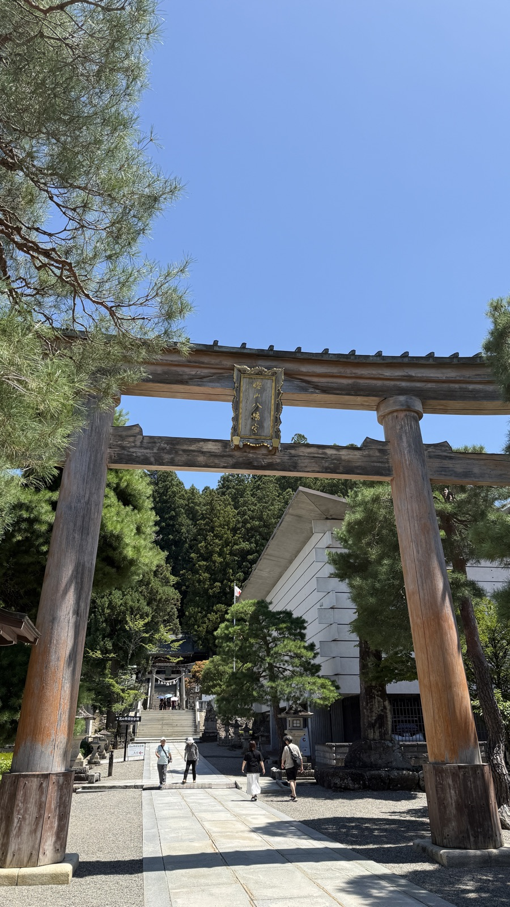
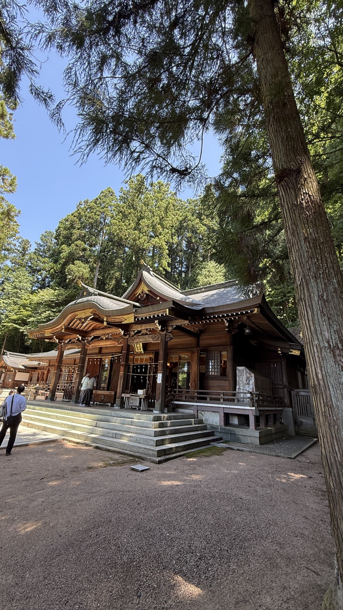
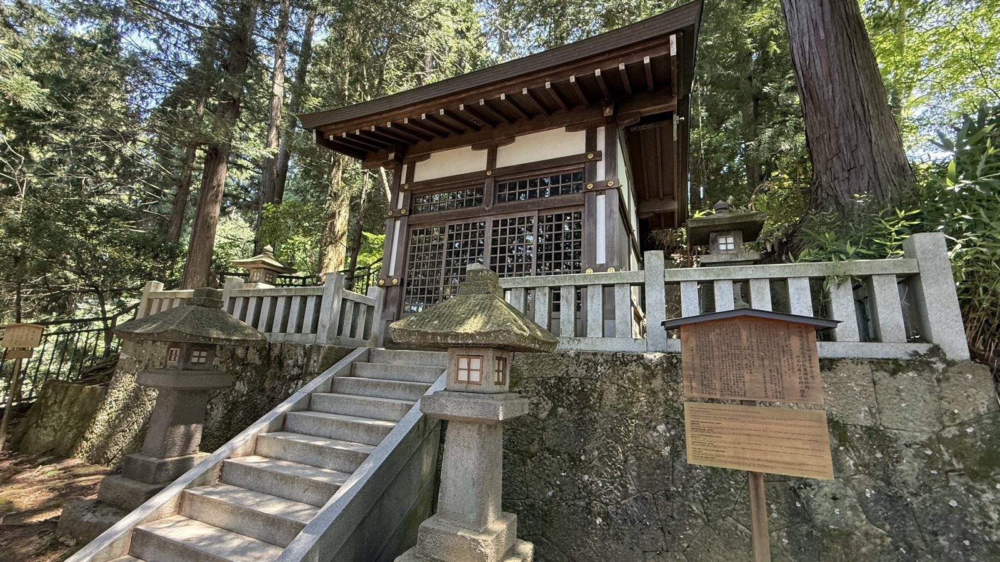

History
由緒・創建
応神天皇を祀る。高山の町の北半分を氏子とする。
町なかの橋から見る大鳥居。この先が高山の町の北半分の氏神。

参道の鳥居。奥の白い建物は屋台会館で、祭の期間外でも実物の屋台を見られる。
Highlights
見どころ
秋の高山祭（八幡祭）の舞台。屋台（山車）にはからくり人形が乗る／屋台会館（祭の期間外でも実物を見られる）／境内。

杉木立に囲まれた本殿。

境内の小社。石灯籠が並ぶ石段の先にある。
Background
文化的背景
高山祭の屋台は、飛騨の大工が代々作り替えてきたもの。水無神社の節と同じ背景（木の技術）がここでは祭の形で現れている。春の山王祭（日枝神社）と秋の八幡祭（桜山八幡宮）で、町が南北に分かれている。ユネスコ無形文化遺産。⚠️高山の日枝神社は現在の地図データに含まれていない（データ上の日枝神社は東京と富山の2社のみ）。